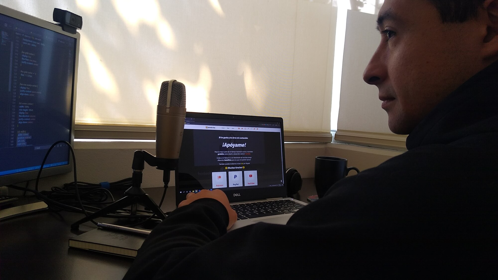

<!DOCTYPE html>
<html lang="es">

<head>
  <sergey-import src="metas/statics" />
  <sergey-import src="metas/titles">Mecenas | jonmircha</sergey-import>
  <sergey-import src="metas/descriptions">MUCHAS GRACIAS a todos los mecenas que han decidido apoyarme para seguir
    generando contenido, esta página con sus datos
    es mi muestra de gratitud.</sergey-import>
  <sergey-import src="metas/urls">https://jonmircha.com/mecenas</sergey-import>
  <sergey-import src="metas/images">https://jonmircha.com/img/posters/mecenas.jpg</sergey-import>
</head>

<body id="mecenas">
  <sergey-import src="components/header.html" />
  <article class="mecenas">
    <aside class="container-lg">
      <h1 class="text-center">El Muro de Mecenas</h1>
      <p class="fluid-1">
        <b>MUCHAS GRACIAS</b> a todos los mecenas que han decidido apoyarme
        para seguir generando contenido, esta página con sus datos es mi
        muestra de gratitud.
      </p>
      <div id="mecenas-list"></div>
      
    </aside>
    <aside class="container-sm section">
      <blockquote class="fluid-1">
        <cite>
          La palabra <b>mecenas</b> hace referencia a aquella persona
          interesada en la cultura y el conocimiento que, por contar con los
          recursos necesarios, patrocina a un artista o científico para
          permitirle realizar su tarea y beneficiarse con ella de algún modo
          más o menos directo.
        </cite>
      </blockquote>
    </aside>
    <sergey-import src="components/sponsors.html" />
  </article>
  <sergey-import src="components/footer.html" />
</body>

</html>
